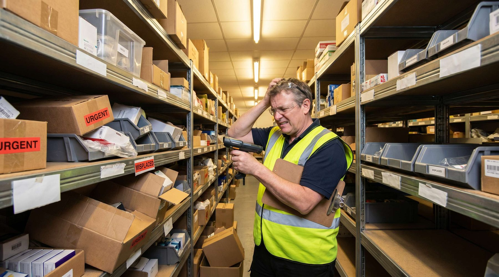

Systemet siger 50 enheder. Hylden er tom.
Varen er væk. Ingen ved hvornår. Ingen ved hvorfor.
Du opdager det først når kunden bestiller , og du ikke kan levere.
Svind over 0,5% af lageromsætningen er et strukturelt problem. Ved 5 mio. kr. i årlig lageromsætning og 1% svind mister du 50.000 kr./år i direkte tab + tabt omsætning.
Hvad vil det sige at miste varer?
👉 Har du samme problem? Se hvordan SmartPack løser det
Svind på et lager dækker over fire kategorier:
- Tyveri , eksternt (kunder, leverandører) eller internt (medarbejdere)
- Placeringsfejl , varer er registreret, men placeret forkert og umulige at finde
- Registreringsfejl , varer er fysisk til stede, men optegnet forkert i systemet
- Skader og kassation , varer er ødelagte eller udgåede, men ikke afregistreret
Alle fire typer resulterer i det samme: systemet siger du har 50 enheder, virkeligheden er 31.
Hvornår er det et problem?
Svind er acceptabelt under 0,2% af omsætningen på lager. Over 0,5% er det et strukturelt problem. Over 1% er det en prioritet.
Symptomerne:
- Du har ordrer du ikke kan ekspedere, selv om systemet viser lager
- Lageropgørelse afviger konstant fra systemantal
- Du finder "forsvundne" varer på forkerte hylder måneder senere
- Medarbejdere kan ikke forklare, hvad der er sket med konkrete partier
Et rødt flag: hvis du ikke kan identificere det seneste tidspunkt en given SKU forsvandt, har du ingen sporbarhed.
Hvorfor det er vigtigt (tal)
Gennemsnitligt lagersvind i europæisk detail og e-commerce ligger på 0,5,1,5% af omsætningen. For en virksomhed med 10 mio. kr. i årsomsætning er det 50.000,150.000 kr. i direkte tab per år , varer du har betalt for, som aldrig når kunden.
Dertil:
- Kundeservice: Oversalg af varer der ikke er på lager koster i gennemsnit 450,850 kr. per ordre inkl. LTV-tab
- Akutindkøb: Varer der mangler fører til dyre hasteindkøb med 15,30% prisoversteg
- Operationelt spild: Medarbejdertid brugt på at lede efter varer er nulproduktiv , typisk 10,20 min. per manglende SKU
Hvad sker der i praksis
En ordre modtages. Systemet bekræfter lager. Plukker går til lokation A3-07 og finder to styk , ikke de fem, systemet angiver. Plukker tager de to, noterer ingenting og vender tilbage. Ordren ekspederes delvis. Kunden kontaktes.
Ingen registrerer afvigelsen systematisk. Ingen ved, hvornår de tre enheder forsvandt. Næste uge sker det igen med en anden SKU.
Ved årsopgørelse er differencen 340.000 kr. i "uforklarligt svind." Ingen ved præcist hvad der skete.
Typiske fejl
1. Kun tælle én gang om året Årlig optælling opdager svind 6,12 måneder for sent. Cyklisk optælling (10,20 SKU'er per dag) fanger problemet inden det vokser.
2. Ingen sporing af bevægelser Hvis systemet ikke registrerer hver bevægelse , modtagelse, pluk, retur, kassation , ved du ikke, hvornår eller hvordan varen forsvandt.
3. Åben adgang til hele lageret Jo færre personer der har adgang til et lagerområde, jo lettere er det at identificere svindkilder. Zones med adgangskontrol reducerer intern tyveri markant.
4. Ingen forskel på "kan ikke findes" og "er tabt" En vare der ikke kan lokaliseres, skal registreres som manglende i systemet , ikke ignoreres. Uden registrering er problemet usynligt.
Sådan gør du det rigtigt
1. Indfør cyklisk optælling Tæl 15,20 SKU'er dagligt på rotation. Alle SKU'er tælles dermed 4,6 gange om året. Afvigelser fanges inden næste peak.
2. Kræv registrering af alle bevægelser Hver flytning , fra modtagelse til kassation , skal registreres i WMS. Ingen bevægelse sker uden scan.
3. Opret en "søgte varer"-procedure Når en medarbejder ikke finder en vare på dens lokation: stop, scan lokationen, registrer afvigelse, meld til supervisor. Ikke: tag fra nærmeste hylde og fortsæt.
4. Brug lokationsbaseret sporing Hver SKU har én primær lokation og må kun placeres der. Varer der placeres forkert er funktionelt mistet.
5. Analyser svindmønstre Svind fordeler sig typisk ulige: 20% af SKU'erne tegner sig for 80% af svindet. Find de SKU'er , og find årsagen.
Brug denne artikel: Tjekliste og næste skridt
- ✓ Beregn nuværende svindrate: (systembeholdning ˆ’ fysisk beholdning) / systembeholdning × 100
- ✓ Identificer de 10 SKU'er med størst historisk afvigelse
- ✓ Start cyklisk optælling fra næste uge (15 SKU'er/dag)
- ✓ Indfør obligatorisk registrering af alle bevægelser
- ✓ Tjek om alle bevægelser er sporbare i systemet
- ✓ Definer procedure for "vare ikke fundet"
Formel: Svindrate = (Systembeholdning ˆ’ Fysisk beholdning) / Systembeholdning × 100%
Næste skridt: Læs "Vi mangler overblik over lageret" og "Vores data er rod" for systemmæssig sporbarhed.
SmartPack understøttelse
SmartPack registrerer automatisk alle lagerbevægelser med tidsstempel og medarbejder-ID. Cyklisk optælling er en standardfunktion , systemet foreslår daglige optællingslister baseret på SKU-historik og svindrisiko. Afvigelser logges øjeblikkeligt og synliggøres i dashboardet.
Ved implementering kan SmartPack sammenligne historiske ordrer med bevægelser og identificere, hvornår og hvor svind typisk opstår.